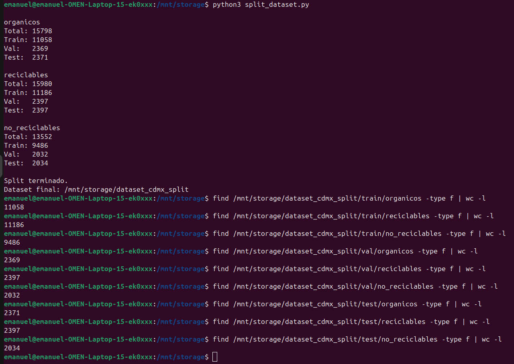
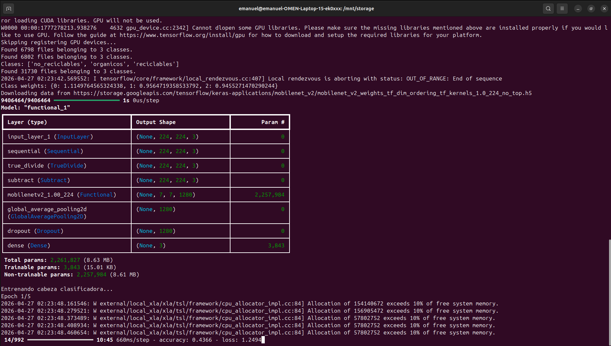
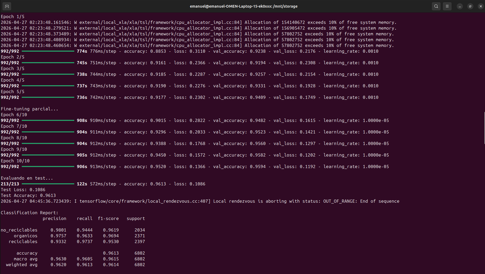
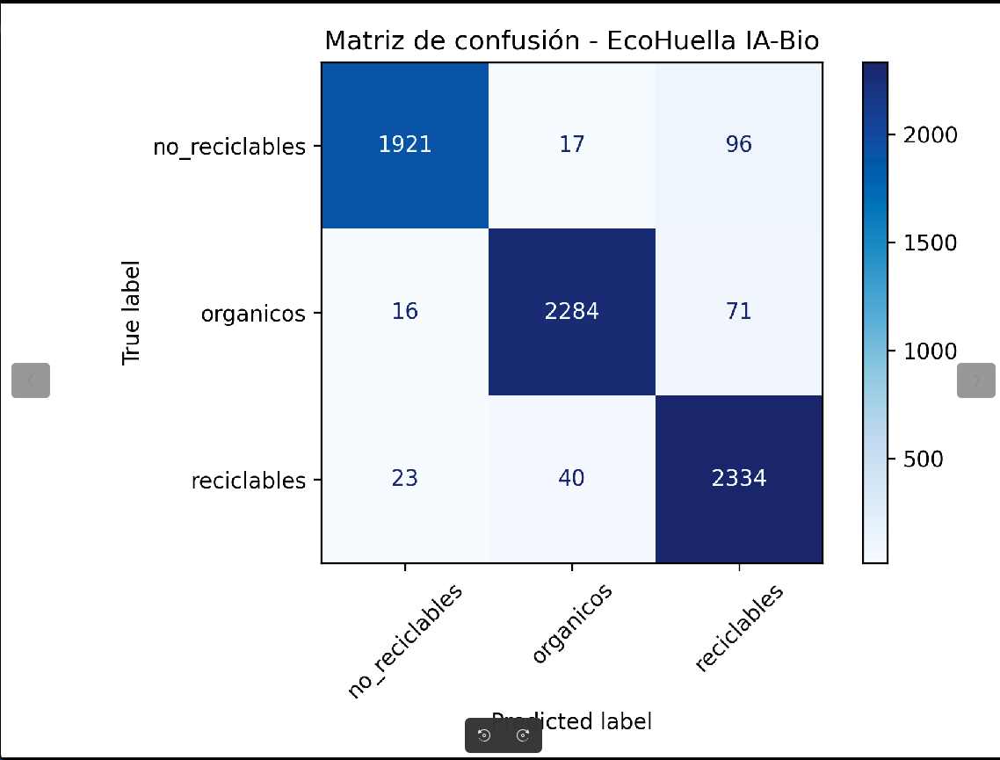

MobileNetV2 CDMX reconoce las tres categorías
El sistema recibe una imagen del residuo, la adapta a 224 × 224 px y ejecuta un clasificador entrenado con las clases orgánicos, reciclables y no reciclables.
Visión computacional aplicada
EcoHuella usa clasificación visual ligera para tomar decisiones en el borde, sin depender de un servidor externo para cada depósito.
El sistema recibe una imagen del residuo, la adapta a 224 × 224 px y ejecuta un clasificador entrenado con las clases orgánicos, reciclables y no reciclables.
El modelo devuelve etiqueta y probabilidad softmax. Si la confianza es baja, el sistema solicita repetir la captura en lugar de abrir una compuerta equivocada.
Pipeline de software
La cámara toma imagen cuando hay movimiento o presencia frente al área de lectura.
Resize a 224 × 224 px, normalización y preparación del frame para MobileNetV2.
El modelo obtiene probabilidades por clase y aplica el umbral de confianza.
Se muestra el ícono PNG, se espera proximidad y se abre la compuerta asignada.
Guarda evento, etiqueta y opcionalmente foto local para mejorar el dataset.
Resultados del prototipo
Desempeño global del modelo sobre el conjunto de prueba.
Balance entre precisión y recall para clasificación multiclase.
Capacidad para recuperar correctamente residuos biodegradables.
Evidencia del proceso
Las capturas del proceso muestran la preparación del dataset CDMX, el entrenamiento por etapas, la evaluación final y la matriz de confusión usada para validar el modelo antes de exportarlo.

La división mantiene 70% entrenamiento, 15% validación y 15% prueba con semilla fija.

Se congeló la base preentrenada y después se ajustaron las últimas capas para el dominio de residuos.

El reporte muestra precisión, recall y F1-score sobre 6,802 imágenes de prueba.

La diagonal principal confirma buen desempeño en orgánicos, reciclables y no reciclables.
Diseño del pipeline
La predicción no se usa de forma aislada. Antes de accionar el mecanismo, el sistema revisa condiciones de operación: cámara activa, sensor disponible, objeto único, confianza suficiente y estado libre de la compuerta.
Tiempos objetivo
Captura: 0.5–1 s. Clasificación: 0.2–1 s según modelo y optimización. Apertura: 1–3 s. Espera antes de cerrar: 5–10 s o hasta detectar que el usuario retiró la mano.